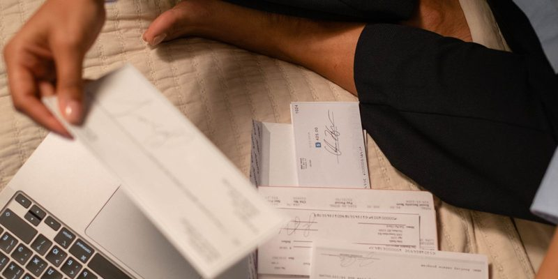
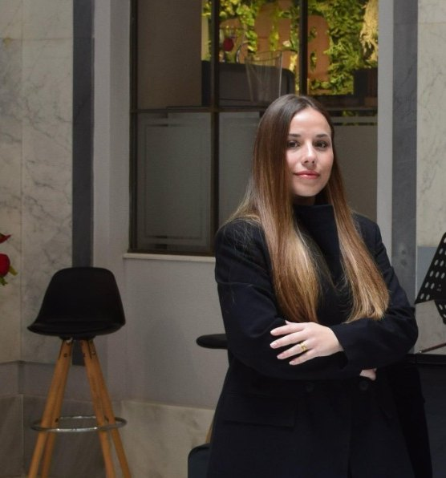
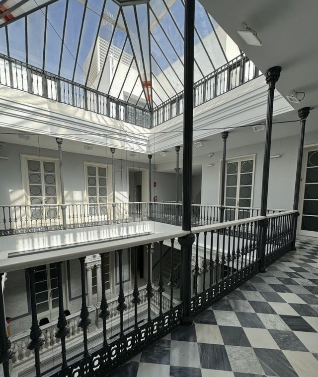

Despacho de abogados en Cádiz, especializado en Ley de Segunda Oportunidad y en cláusulas abusivas. Trato cercano, respuesta ágil y transparencia durante todo el proceso.
Plazos de compromiso del proceso de Segunda Oportunidad tal y como los publica el despacho.
MHC es un despacho de abogados en Cádiz que se caracteriza por su proximidad al cliente, dedicándose de lleno a cada caso para resolverlo de la mejor manera posible. Nuestra premisa es brindar respuestas rápidas y ofrecer una atención personalizada, acompañando al cliente de manera transparente durante todo el proceso.
El despacho MHC posee una sólida formación jurídica y experiencia en la resolución de los problemas cotidianos de nuestros clientes. Nuestro equipo se mantiene constantemente actualizado para ofrecer el mejor servicio en cada caso que abordamos. Nuestro objetivo es proporcionar a cada cliente la tranquilidad que necesita.
Por ello, enfocamos nuestro trabajo desde la especialización: solo ofrecemos servicios en los que contamos con la garantía de tener la formación y experiencia necesarias.
Trabajamos desde la especialización. Estas son las materias en las que contamos con formación y experiencia previa.

La ley contempla una salida para que las personas endeudadas puedan empezar de cero. Estamos especializados en estos procesos y hemos asesorado a clientes que ya han obtenido la exoneración de su deuda.
Revisamos los contratos de productos bancarios y analizamos la posible existencia de cláusulas abusivas o de intereses abusivos o usurarios: cláusula suelo, gastos de hipoteca, IRPH y tarjetas revolving.
Atención ágil y personalizada en asuntos familiares sensibles: uso de la vivienda familiar, guarda y custodia de los hijos, pensión alimenticia y modificación de medidas ya acordadas.
Gestión completa del asunto: estudio previo del caso, recopilación de la documentación y preparación de los actos en la notaría. También resolvemos en vía judicial los conflictos entre herederos.
Asesoramiento previo y elaboración personalizada de todo tipo de contratos, siendo los más comunes los de compraventa y arrendamiento, reflejando las particularidades de cada operación.
Segunda Oportunidad y cláusulas abusivas concentran el trabajo del despacho. Cada asunto empieza con un estudio previo de la documentación.
La situación de insolvencia se convierte habitualmente en un verdadero infierno para las personas que se encuentran inmersas en ella. La buena noticia es que la ley contempla una salida para que las personas endeudadas puedan empezar de cero y rehacer su vida.
Cada caso requiere un estudio personalizado: las circunstancias personales y familiares influyen en el planteamiento. Hay clientes que desean salvar algún bien, otros que carecen completamente de bienes y otros con deudas públicas.
El consumidor suele encontrarse en una situación de desventaja e indefensión cuando contrata productos bancarios con una entidad. Revisamos los contratos suscritos por el cliente y analizamos la posible existencia de cláusulas abusivas o de tipos de interés abusivos o usurarios.
Si la entidad ha vulnerado sus obligaciones legales, el cliente podría conseguir que se anulasen los intereses del préstamo o de la tarjeta revolving contratada. El objetivo es recuperar la equidad en los acuerdos financieros.
Sabemos que es una situación muy complicada y que por eso necesitas una respuesta rápida y un trato cercano y transparente.
Nos comprometemos a llamarte en un margen de dos horas y te damos cita en nuestra oficina en un plazo máximo de una semana para realizar el estudio de viabilidad.
En la cita analizamos tus circunstancias y, si el estudio de viabilidad es positivo, te indicamos la documentación que nos tienes que entregar.
Desde que nos entregas la documentación nos comprometemos a iniciar el proceso de segunda oportunidad en un plazo máximo de dos semanas.
Iniciamos el proceso y hacemos un seguimiento hasta su finalización. El objetivo es conseguir la exoneración de la deuda para que puedas empezar de cero.
Nos gusta tener un contacto directo con el cliente y ser accesibles para que en todo momento nos pueda consultar sus dudas o hablarnos de sus objetivos.
Informamos en todo momento de los pasos que damos y del estado de los procedimientos. Realizamos un estudio previo en cada asunto, para que el cliente tenga la máxima información antes de decidir.
Estamos en constante formación y centrados en la especialidad: ofrecemos aquellos servicios respecto de los que contamos con formación especializada y experiencia previa.

Alba es abogada en ejercicio. Su afán por el Derecho Penal nace desde los inicios de sus estudios y continúan durante toda su carrera, comenzando por tareas que estuvo desarrollando como alumna colaboradora en el «Departamento de Derecho Internacional Público, Derecho Penal y Derecho Procesal» de la Universidad de Cádiz, así como la realización de su Trabajo Fin de Grado sobre «La prisión permanente revisable» y su Trabajo Fin de Máster sobre «El asesoramiento a un acusado con Trastorno Mental Grave». Especialista en el ámbito del Derecho Mercantil relacionado con la «Ley de la 2ª Oportunidad».
La mejor estrategia de defensa que puede diseñar un abogado siempre parte de la versión de los hechos que ofrece el cliente.
Lo que el despacho se compromete a hacer antes de empezar y mientras dura el asunto.
Cada caso requiere un estudio personalizado: las circunstancias personales y familiares influyen en el planteamiento que se puede hacer en cada asunto. Esta web es una demostración y no publica honorarios; el asistente tampoco los facilita.
Sí, la ley actual reconoce la posibilidad de perdonar deudas de hasta 10.000 euros con Hacienda, y 10.000 euros con Seguridad Social.
Actualmente, el deudor puede someterse a un plan de pagos para evitar perder sus bienes. Además, en los casos en que el deudor se encuentra al día con el pago de la hipoteca, y la cantidad pendiente de hipoteca sea igual o superior al valor de la vivienda, el deudor podrá salvar su vivienda.
En el caso de los fiadores, la exoneración del deudor no se extiende a ellos, sino que tendrán que presentar su propia solicitud de segunda oportunidad.
Sí, la ley contempla la posibilidad de que el cónyuge del deudor solicite en el procedimiento la disolución de la sociedad de gananciales, y tendrá una opción preferente para poder adquirir los bienes gananciales y así salvarlos del concurso de su pareja.
La ley contempla que desde el auto de declaración de concurso se paralicen las ejecuciones de los acreedores.
Los tribunales han fijado criterios para determinar si los intereses de una tarjeta de crédito son usurarios. Realizamos un estudio previo de la documentación del cliente para determinar si existe usura en el tipo de interés. Si hay viabilidad, podemos interponer demanda para que se anulen los intereses de la tarjeta.
En muchas ocasiones existe en las condiciones de las tarjetas falta de transparencia y condiciones abusivas, lo que provoca que el deudor permanezca muchos años sin poder desvincularse de la deuda. La falta de transparencia y la abusividad pueden provocar que se anulen los intereses de la tarjeta, y el cliente pueda así saldar por fin su deuda.
Es una cuestión que sigue debatiéndose, pero actualmente el criterio dominante es que todavía se pueden reclamar los gastos hipotecarios abonados por el consumidor.

Cuéntale a LEX qué te ocurre. Recoge tus datos y el despacho te contacta para confirmar la cita. No da asesoramiento jurídico ni valora la viabilidad de tu caso: eso lo hace la abogada.
Llamar al 623 00 37 85